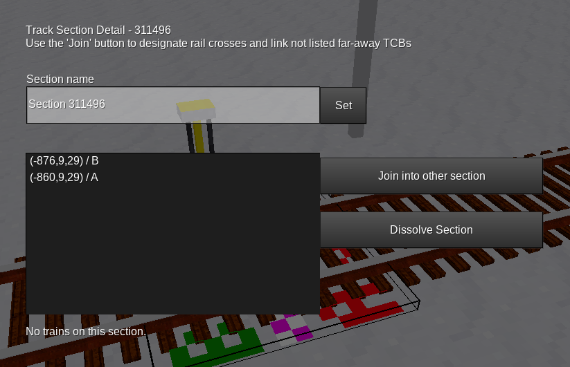
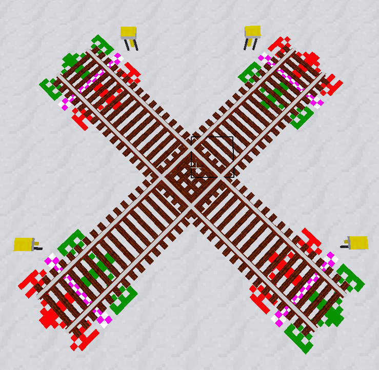
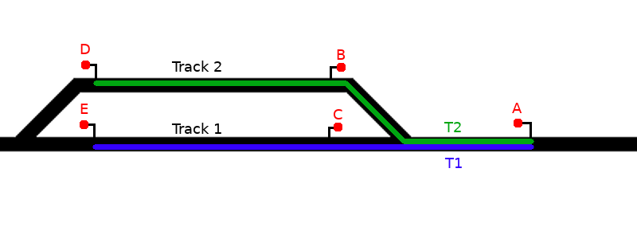

Interlocking System Guide
In real-world railways, a so-called interlocking system is a set of railway signals and trackside equipment. Its purpose is to prevent conflicting train movements which otherwise could result in derailing or colliding trains. If you want more information, just search for “railway interlocking” on the internet.
Real-world interlocking systems perform this task by setting routes. A route is a path along a track that a train can safely pass. To set a route for a train, the signalman (the operator of a signal box) has to set switches (turnouts) to the correct position and lock them in order to make a signal for a train show “Proceed”. In newer systems, this is done automatically by the interlocking system. A route can not be set if switches are locked to a wrong position by another route or if any portion of the route is occupied by a train.
The interlocking system in this Minetest mod tries to follow real-world interlocking systems as far as applicable. It divides tracks into track sections and implements a route setting mechanism following the same principle.
However, for the sake of simplicity of implementation and usage, not all concepts of real-world interlocking have been taken over. Especially, there is no mechanism for overlap.
If you are looking for a place to learn how real-world interlocking systems work, have a look at “SimSig”. By looking at their simulations, you can obtain experience on how to set up your own interlocking systems in AdvTrains. The SimSig glossary is a good place to look up unknown terms in this document.
In the real world, a line of track is divided into so-called track sections, or track circuits. Those systems often can not tell where exactly a train is, but only which track sections it occupies. A route can never be set through an occupied track section.
A track section often covers:
You will find some examples on how to interlock certain patterns later.
In this mod, you will not directly configure the locations of track sections. Instead, you designate the borders of each track section using a special node, the Track Circuit Break, abbreviated TCB.
For example, if you want to create a track section for a piece of a main running line, you set up two TCBs at the ends of this track circuit.
Setting up a TCB works as follows:
The result should look like this:
Now you have assigned the TCB node to a rail. Right-click the TCB node once again. This will bring up a form which looks as follows:

You see that the form is divided in side A and side B. To designate where each side is, a marker is displayed on the rail. You can always make this marker show up by punching the TCB node, and remove it by punching the marker. Both sides are shown as “End of interlocking”. This means that there is no track section set up at this place.
You should repeat this procedure once again a few meters away from the first TCB to create a second TCB on the same track.

Once you have both bordering TCBs set up, you can now create the actual track section. To do this:
Now, the text on the formspec has changed. It shows something like this:

Clicking “Show Track Section” brings up another formspec:

On the top, you see a list of all TCBs that border this track section. In your case, there should be two TCBs listed. If there’s only one, head over to 2.2. You should now select a name for the track section, to identify it later.
The same procedure is applicable when you create a turnout track section, except that you have to set up three or more TCBs.
The AdvTrains interlocking system allows you to add more TCBs after you have created a track section. This works without problems in most cases. For example, you can easily insert a turnout into an already set-up track section and create another TCB behind it, and AdvTrains will automatically detect the existing track section. Problems arise only if you try to insert a TCB in-between a section, in which case both sides of the TCB will end up assigned to the same section. The code currently does not handle this case properly, so try to avoid this situation by all means. As a last resort, you can always dissolve a faulty track section, as described in the next chapter.
2.2 Long track sections, crossings and other edge cases
2.2.1 Very long track sections
If you try to set up a track section that is longer than 1000 nodes, advtrains won’t recognize the TCB at the other end because of a safety limit in the traverser function, which is supposed to prevent deadlocks. This case has happened when the Track Section overview screen only shows one TCB in the list. The procedure for this is as follows:
The other, missing TCB should now appear in the list. If you accidentally started such a joining procedure, click the “X” button on the right.
Since rail crosses are created by laying tracks across each other without logical connection, there’s no way for advtrains to know whether rails cross each other.
Rail crossings in interlocking systems are always one single track section, which in most cases has 4 TCBs adjacent.

The procedure is quite similar to the one for long sections: First, create two track sections for the branches, and then use the “Join” function to merge both sections into one.
2.2.3 Deleting and re-adding single TCBs to a section
In some occasions, for example when you remove a siding or a crossover, it can be necessary to unassign a TCB from a track section. There are multiple ways to do this:
The result is that the TCB shows “End of Interlocking” and the section does not list the TCB as an endpoint anymore.
The other case is adding a siding or a crossover, in which case one or more TCBs still show “End of Interlocking” although they should be part of a section:
If you made a mistake setting up something and you don’t see any other way to fix a misconfigured track section, you can always delete it using the “Dissolve section” button. This operation removes the track section and sets all TCBs that previously belonged to the section as “End of Interlocking”. This will always work and lets you start over new with setting up track sections.
This section shows some examples on how you should set up track sections on certain track configurations.
The purpose of signals is to inform trains about whether they can proceed into the next section safely. Making a section of track safe to pass for a train, turnouts need to be set to the correct position and no other train should be allowed to cross or share parts of the route with this train.
Signals in the advtrains interlocking system are positioned - like in real life - at the border of track sections.
When you set up a signal, do the following steps:

You can assign a signal to each side of a TCB. This is, for example, useful when creating block sections on a bi-directional main running line.
A so-called route is a locked path between two signals, which locks all turnouts in the correct position.
Example: Imagine a station with 2 platforms on a single track running line. We are looking at signal A. You probably want trains coming from the right to go into platform 1 or into platform 2, so you need to program 2 routes.

This leads us to the most important aspect of route programming: Routes always start at a signal (A) and end at a signal facing in the same direction (D and E), not at an opposite-facing signal (B and C). There are only few exceptions, we’ll cover this later.
When you set a route to make a train proceed on it, the interlocking system ensures that:
For this to work, you need to specify all track sections the train will pass along, as well as the positions of all turnouts that need to be locked. Those are not only the turnouts that lay directly on the train’s route, but also some turnouts on adjacent tracks, the so-called flank protection.
The purpose of flank protection is to prevent runaway trains and/or wagons to pass into a route. This is achieved by setting nearby turnouts to a position that points “away” from the route. Example:

The upper turnout, of course, needs to be locked in straight (normal) position, while the lower one is not relevant for the route itself. But what if the lower turnout was set to the diverging (reverse) position and the driver of another train approaching signal B fails to see the red light? This train would crash into the first one. To minimise danger, that other train would need to be routed towards signal D.
There are, of course, situations, where both positions of a turnout would conflict with a route equally. In those situations, there’s nothing you can do and no flank lock needs to be set.
Operating railways is not all about driving trains around. Coupling, decoupling and moving single engines, wagons or groups of wagons across a station, called shunting, also plays an important role.
Remember what we said about routes: There must be no rail vehicles on the route. So what if you have some goods wagons ready on a siding, and want to couple an engine to it? You can not set a regular route into the siding, because it is occupied.
The solution is to program a second route into the siding, but with the difference that it already ends at the rear-facing signal of it, so it doesn’t include the siding section itself:

The Sht2 route then needs to show a shunt aspect, which instructs the driver to proceed slowly and watch out for vehicles on the route. To show a “free” aspect here would be wrong, because that would mean that the track is free until the next main signal, which it is clearly not.
Note that advtrains_interlocking currently does not allow to set individual aspects for routes, this is a feature still to be implemented soon.
Shunt routes like this are, so far, the only exception to the “Routes should end at a signal facing the same direction” rule.
In early real-life interlocking systems, routes either had to be cancelled by the signalman after the train had passed the route, or there was a single release contact at the end of the route. However, as interlocking systems evolved and the position of trains is now roughly known by the track sections, portions of the route can be freed as soon as the train has left the corresponding section.
AdvTrains has chosen a modern approach to route releasing. Each turnout lock is associated to a track section belonging to the route’s path. Once the train leaves this section, all assigned locks are also freed.
The route programming procedure is quite straightforward if you’ve read the previous sections and understood how routes should be set.
Routes always start at a signal. You must have assigned the signal to a TCB, as described earlier.
When you right-click the signal, it no longer changes its aspect. Instead, a formspec pops up, showing you an (empty) list of routes with the possibility to set them or to create new routes. Click the “Create new route” button to start programming a new route.
The form closes, and an arrow is displayed on the TCB. You are now in “Route Programming” mode, programming the first track section of the route. Now:
Once you’ve done this, the lock markers change to “Route Lock”, telling they can’t be changed anymore. Repeat the above procedure until you have punched the final TCB, at which the route should end. As mentioned before, there should be a signal at this place, however this is not enforced. Now, run the chat command /at_rp_set <name of route> to complete programming the route.
A few hints:
4 Interlocking system operation
Setting up the interlocking for a portion of a railway network requires some time, experience and planning, but once done, there’s not much to do anymore to make trains run on your, now safer, railway. This section covers some useful practices to route trains across your network.
At the moment, routes can only be set by clicking the signal or via LuaATC, except if you use automatic working. It is planned to control this via the onboard computer and via a “signal box” view based on the currently broken itrainmap.
4.1 Simple route setting and cancelling
To set a route, simply right-click the signal, select a route and click “set route”. If there are no conflicts, the signal turns green and the train is allowed to proceed.
It may be possible that the route can not be set, because one or more other routes conflict with the current one, or a section is blocked. In this case, the signal stays red, and the conflicting item is shown in the formspec. As soon as the conflict is resolved (by cancellation or release of the conflicting route, or the section becoming free), the requested route will be set and the signal turns green.
If a route is either requested or set, it can be cancelled from the signalling formspec. This means that all turnouts and sections are released, and the signal reverts back to red. This of course only works when the train has not passed the signal yet. There is no mechanism for Approach Locking.
Block signals on main running lines usually only have a single route to set, the one proceeding along the main line. Their purpose is only to show whether there are trains in the next section. So, it would be convenient if this only route would set itself again after a train passed.
This is what Automatic Working is for. Set a route, click “Enable Automatic Working”, and as soon as a train passes, the route is automatically re-set.
This function is nearly identical to SimSig automatic signals. It can also be useful on a line with high traffic, when there’s a low-frequented access to a siding. You’d enable automatic working for the main route and cancel it only when you need a train to go into the siding.
The interlocking system is mainly finished, though there are still some plans and ideas. They include:
Apart from this, there’s the large oncoming project of a new timetable-based train automation system, but this will take some time to evolve and is out of the scope of this document.
If you have any suggestions, corrections, improvements, criticism or cute kittens and stuff, you can always contact me by various means (Forum PM, E-Mail (orwell@bleipb.de), Linuxworks server chat a.s.o.). Have fun!
- orwell